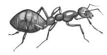

I can be very silly, or serious. I like to take in the world and lift up the voices of those around me. I will tell you what's on my mind if it's on something I have experience with, and I try not to talk over others on things I don't have experience with. I was born and raised in New York City, and now I live in Philadelphia.
For fun I like to skate and bike around the city. The next skateboard trick I want to learn is a frontside boardslide. I like to play guitar and sing too. I've been having fun learning some Heartless Bastards songs recently; Erika Wennerstrom's voice (their lead singer) is so beautiful.
I like to read books, graphic novels, manga, the newspaper, ants (),